01 / OVERVIEW派系概览
骑士冲锋、农民交税，浪漫又穷。 推荐首发领主：卢恩·列奥康沃尔。骑士精神与农民经济：骑士精神影响全军，农民数量在收入与兵源之间权衡。
秩序 · 骑兵 / 冲锋
骑士精神与农民经济：骑士精神影响全军，农民数量在收入与兵源之间权衡。
为什么玩它
骑兵冲锋手感极佳，圣杯骑士是游戏最强骑兵之一。
要注意什么
步兵弱、经济穷、前期难熬；对操作和冲锋时机要求高。
不要带太多农民步兵；骑士反复冲锋、弓手放后排，靠机动拖垮对面。
本页数值为 Patch 9.0.4 / Ultra 规模 / 0 级，不含科技、技能、装备、领主光环与战场增益。维护费是战役基础值，受难度、补给线与派系减免影响。
02 / RECOMMENDED推荐兵种
每个派系挑 6 个最值得先练、先招、先知道的名字。不是“唯一答案”，但能覆盖扛线、输出、机动和攻城。
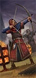
便宜，可换火焰箭。
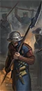
前期反骑兵 / 巨兽。
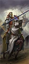
核心冲击骑兵。
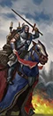
近战更强，适合缠斗。
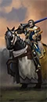
游戏最强骑兵之一。
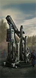
远程拆墙。
03 / ROSTER完整兵种表
按类别展开。T 是招募等级；兵模是单位里的模型数；远程 / 射程一栏，前者是每 10 秒全队伤害，后者是射程。名将团单独列在最后。
领主与传奇领主8 个单位
| 兵种 | T | 兵模 | 生命 | 护甲 | 领导 | 速度 | 近攻 | 近防 | 武器 | 远程 / 射程 | 维护 |
|---|---|---|---|---|---|---|---|---|---|---|---|
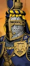 Alberic de BordeleauxLord |
— | 1 | 4,168 | 90 | 75 | 34 | 57 | 40 | 440 | — | 250 |
Fay EnchantressWizard Lord |
— | 1 | 3,688 | 15 | 70 | 34 | 38 | 34 | 300 | — | 300 |
King Louen LeoncoeurLord |
— | 1 | 4,288 | 90 | 80 | 34 | 60 | 50 | 450 | — | 250 |
 LordLord |
— | 1 | 4,068 | 90 | 75 | 34 | 54 | 48 | 430 | — | 250 |
Prophetess (Beasts)Wizard Lord |
— | 1 | 3,688 | 15 | 65 | 34 | 34 | 30 | 285 | — | 300 |
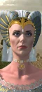 Prophetess (Heavens)Wizard Lord |
— | 1 | 3,688 | 15 | 65 | 34 | 34 | 30 | 285 | — | 300 |
Prophetess (Life)Wizard Lord |
— | 1 | 3,688 | 15 | 65 | 34 | 34 | 30 | 285 | — | 300 |
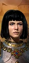 Repanse de LyonesseLord |
— | 1 | 4,168 | 90 | 75 | 34 | 45 | 57 | 440 | — | 213 |
英雄8 个单位
| 兵种 | T | 兵模 | 生命 | 护甲 | 领导 | 速度 | 近攻 | 近防 | 武器 | 远程 / 射程 | 维护 |
|---|---|---|---|---|---|---|---|---|---|---|---|
Damsel (Beasts)Wizard |
— | 1 | 3,420 | 15 | 55 | 40 | 34 | 22 | 285 | — | 250 |
 Damsel (Heavens)Wizard |
— | 1 | 3,420 | 15 | 55 | 40 | 34 | 22 | 285 | — | 250 |
Damsel (Life)Wizard |
— | 1 | 3,420 | 15 | 55 | 40 | 34 | 22 | 285 | — | 250 |
 FelixMelee Specialist |
— | 1 | 4,168 | 70 | 70 | 34 | 50 | 55 | 380 | — | — |
 GotrekMelee Specialist |
— | 1 | 5,902 | 0 | 100 | 42 | 70 | 50 | 470 | — | — |
Henri le MassifMelee Specialist |
— | 1 | 3,788 | 85 | 80 | 36 | 45 | 45 | 390 | — | — |
PaladinMelee Specialist |
— | 1 | 3,688 | 85 | 65 | 34 | 45 | 40 | 390 | — | 250 |
The Green KnightMelee Specialist |
— | 1 | 5,274 | 0 | 100 | 84 | 60 | 50 | 430 | — | — |
近战步兵9 个单位
| 兵种 | T | 兵模 | 生命 | 护甲 | 领导 | 速度 | 近攻 | 近防 | 武器 | 远程 / 射程 | 维护 |
|---|---|---|---|---|---|---|---|---|---|---|---|
Grail ReliquaeSupport Infantry |
T1 | 1 | 3,474 | 40 | 75 | 40 | 24 | 28 | 45 | — | 125 |
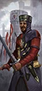 Men-at-ArmsSword Infantry |
T1 | 120 | 7,800 | 30 | 45 | 30 | 27 | 26 | 26 | — | 63 |
Men-at-Arms (Polearms)Halberd Infantry |
T1 | 120 | 7,920 | 30 | 50 | 30 | 22 | 40 | 25 | — | 113 |
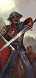 Men-at-Arms (Shields)Sword Infantry |
T1 | 120 | 7,800 | 30 | 45 | 30 | 27 | 34 | 26 | — | 81 |
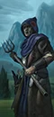 Peasant MobAxe Infantry |
T1 | 160 | 8,640 | 15 | 36 | 33 | 18 | 10 | 16 | — | 25 |
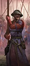 Spearmen-at-ArmsSpear Infantry |
T1 | 120 | 7,800 | 30 | 45 | 30 | 18 | 30 | 22 | — | 63 |
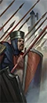 Spearmen-at-Arms (Shields)Spear Infantry |
T1 | 120 | 7,800 | 30 | 45 | 30 | 20 | 38 | 22 | — | 81 |
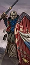 Battle PilgrimsSword Infantry |
T2 | 120 | 8,280 | 30 | 75 | 30 | 32 | 33 | 31 | — | 150 |
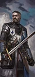 Foot SquiresGreatsword Infantry |
T2 | 120 | 8,280 | 70 | 70 | 28 | 28 | 26 | 35 | — | 188 |
远程步兵3 个单位
| 兵种 | T | 兵模 | 生命 | 护甲 | 领导 | 速度 | 近攻 | 近防 | 武器 | 远程 / 射程 | 维护 |
|---|---|---|---|---|---|---|---|---|---|---|---|
Peasant BowmenMissile Infantry |
T1 | 90 | 4,860 | 15 | 36 | 33 | 10 | 14 | 22 | 17 / 160m | 100 |
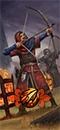 Peasant Bowmen (Fire Arrows)Missile Infantry |
T1 | 90 | 4,860 | 15 | 36 | 33 | 10 | 14 | 22 | 21 / 160m | 113 |
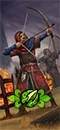 Peasant Bowmen (Pox Arrows)Missile Infantry |
T1 | 90 | 4,860 | 15 | 36 | 33 | 10 | 14 | 22 | 17 / 160m | 113 |
近战骑兵6 个单位
| 兵种 | T | 兵模 | 生命 | 护甲 | 领导 | 速度 | 近攻 | 近防 | 武器 | 远程 / 射程 | 维护 |
|---|---|---|---|---|---|---|---|---|---|---|---|
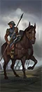 Mounted YeomenCavalry |
T1 | 60 | 5,520 | 30 | 50 | 92 | 26 | 26 | 28 | — | 100 |
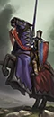 Knights ErrantShock Cavalry |
T2 | 60 | 6,180 | 80 | 60 | 84 | 28 | 28 | 30 | — | 175 |
Knights of the RealmShock Cavalry |
T2 | 60 | 6,720 | 100 | 75 | 84 | 32 | 28 | 40 | — | 238 |
Questing KnightsCavalry |
T3 | 60 | 6,960 | 90 | 75 | 84 | 40 | 39 | 52 | — | 275 |
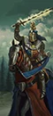 Grail GuardiansCavalry |
T4 | 32 | 8,064 | 120 | 85 | 84 | 42 | 58 | 60 | — | 475 |
Grail KnightsShock Cavalry |
T4 | 48 | 7,296 | 120 | 80 | 84 | 38 | 34 | 46 | — | 462 |
远程骑兵1 个单位
| 兵种 | T | 兵模 | 生命 | 护甲 | 领导 | 速度 | 近攻 | 近防 | 武器 | 远程 / 射程 | 维护 |
|---|---|---|---|---|---|---|---|---|---|---|---|
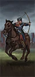 Mounted Yeomen ArchersMissile Cavalry |
T2 | 60 | 4,980 | 30 | 45 | 92 | 18 | 16 | 22 | 17 / 125m | 125 |
怪骑3 个单位
| 兵种 | T | 兵模 | 生命 | 护甲 | 领导 | 速度 | 近攻 | 近防 | 武器 | 远程 / 射程 | 维护 |
|---|---|---|---|---|---|---|---|---|---|---|---|
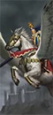 Pegasus KnightsFlying Cavalry |
T3 | 24 | 6,264 | 80 | 75 | 105 | 36 | 32 | 56 | — | 275 |
Royal Pegasus KnightsFlying Cavalry |
T4 | 24 | 6,744 | 80 | 80 | 105 | 42 | 36 | 61 | — | 400 |
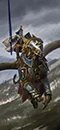 Royal Hippogryph KnightsFlying Monstrous Cavalry |
T5 | 12 | 8,112 | 90 | 80 | 90 | 46 | 36 | 135 | — | 550 |
炮兵 / 战争机器2 个单位
| 兵种 | T | 兵模 | 生命 | 护甲 | 领导 | 速度 | 近攻 | 近防 | 武器 | 远程 / 射程 | 维护 |
|---|---|---|---|---|---|---|---|---|---|---|---|
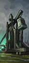 Blessed Field TrebuchetsCatapult |
T2 | 4 | 4,512 | 15 | 40 | 20 | 10 | 6 | 30 | 208 / 440m | 213 |
Field TrebuchetsCatapult |
T2 | 4 | 4,512 | 15 | 40 | 20 | 10 | 6 | 30 | 153 / 440m | 163 |
名将团6 个单位
| 兵种 | T | 兵模 | 生命 | 护甲 | 领导 | 速度 | 近攻 | 近防 | 武器 | 远程 / 射程 | 维护 |
|---|---|---|---|---|---|---|---|---|---|---|---|
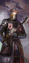 Beastslayers of Bastonne (Foot Squires)Halberd Infantry · Renown |
T2 | 120 | 8,280 | 80 | 80 | 28 | 31 | 52 | 36 | — | 237 |
The Holy Wardens of La Maisontaal (Battle Pilgrims)Sword Infantry · Renown |
T2 | 120 | 8,280 | 30 | 85 | 30 | 41 | 33 | 44 | — | 200 |
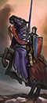 Defenders of the Fleur-de-lis (Knights Errant)Shock Cavalry · Renown |
T3 | 60 | 6,180 | 80 | 70 | 84 | 36 | 36 | 30 | — | 225 |
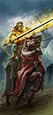 Knights of the Lionhearted (Knights of the Realm)Shock Cavalry · Renown |
T3 | 60 | 6,720 | 100 | 85 | 84 | 41 | 36 | 40 | — | 300 |
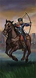 Wardens of Montfort (Mounted Yeomen Archers)Missile Cavalry · Renown |
T3 | 60 | 4,980 | 30 | 55 | 92 | 24 | 22 | 22 | 17 / 125m | 188 |
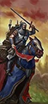 The Companions of Quenelles (Questing Knights)Cavalry · Renown |
T4 | 60 | 6,960 | 90 | 85 | 84 | 50 | 49 | 52 | — | 363 |
已排除“扩展名册（extended roster）”单位。数值为 Patch 9.0.4；不同版本可能微调。
04 / ARMY BUILD配兵思路
先按角色填槽，再按对手换兵。下面是一个通用的 20 槽骨架，以及用本页推荐兵种拼出的示例。
| 角色 | 建议槽位 | 说明 |
|---|---|---|
| 扛线 | 5–6 | 持盾 / 重甲步兵，任务是站住，不是杀敌。 |
| 远程 | 3–5 | 弓箭、火枪或炮兵；至少 2 队能打重甲。 |
| 机动 | 3–4 | 骑兵、战车、飞行单位；包抄、背冲、追逃。 |
| 巨兽 / 炮兵 | 1–3 | 破阵、斩将、攻城；别孤军深入。 |
| 英雄 | 1–3 | 法师 + 支援英雄，嵌入主力。 |
示例：4× 步战侍从（长戟） + 4× 农民弓手 + 3× 王国骑士 + 领主 + 1 英雄，余下 3–4 槽按对手补破甲 / 反大型 / 炮兵。
重甲多带破甲（火枪、大炮、巨斧）；巨兽多带反大型（长戟、弩炮）；鼠人 / 绿皮多带范围伤害（吹息、炮兵、火焰）；骑兵多留 2 队长戟或反大型。不要一套配兵打到底。